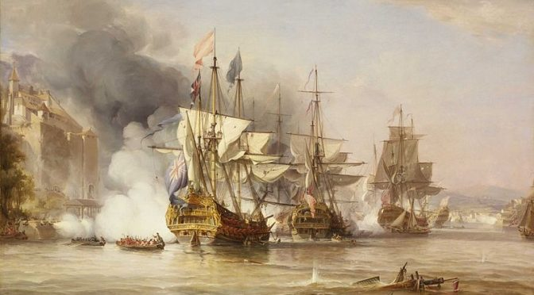
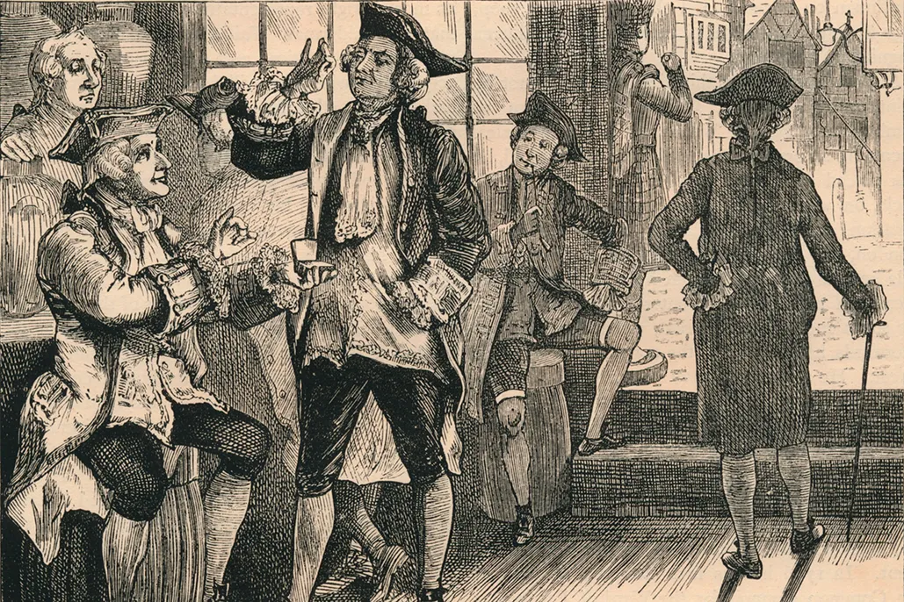

A Timeline of Transformation
The 18th century was a time of great change and upheaval for the British Empire. It began with the loss of the American colonies, which was a major blow to the prestige and power of the British monarchy. This loss was followed by a period of political instability and economic hardship, as Britain struggled to adjust to its new role in the world. However, the 18th century also saw the beginning of a new era of colonial expansion, as Britain sought to establish new settlements and trading posts in Africa, Asia, and the Pacific.
One of the most significant challenges to the British monarchy in the 18th century was the rise of colonial resistance. The American colonists, angered by what they perceived as unfair taxation and representation, revolted against British rule in 1775. The American Revolution was a long and bloody conflict, which ultimately resulted in the independence of the United States. This revolution had a profound impact on the British Empire, as it showed that the colonies were not afraid to challenge the authority of the monarchy.
In addition to the American Revolution, there were a number of other challenges to the British monarchy in the 18th century. The Jacobite risings, which sought to restore the Stuart dynasty to the throne, caused considerable unrest in Scotland and Ireland. The Gordon Riots, which were anti-Catholic disturbances in London, led to widespread violence and destruction. And the rise of political parties, such as the Whigs and Tories, further weakened the power of the monarchy.
Despite these challenges, the British monarchy survived the 18th century. However, the cracks in the Empire were beginning to show. The loss of the American colonies, the rise of colonial resistance, and the growth of political and social unrest all contributed to a weakening of the monarchy's authority. The 19th century would see even greater challenges to the Empire, as the forces of nationalism and democracy grew stronger.